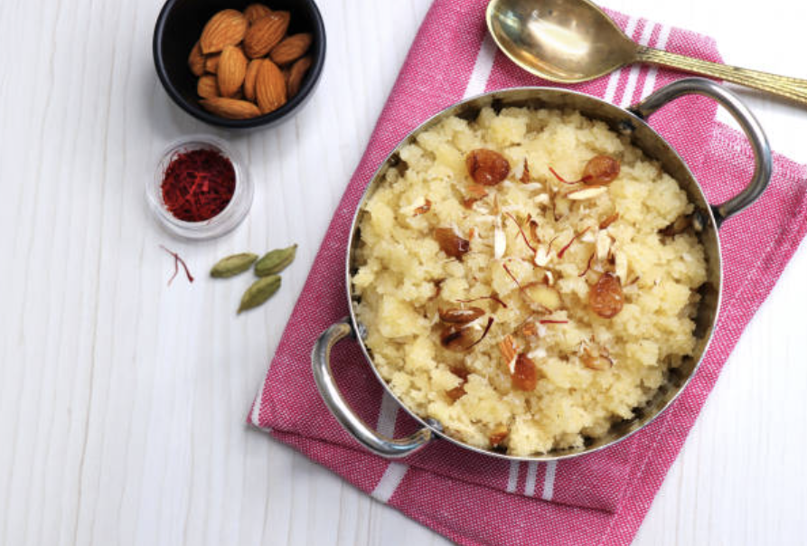

Our Recipes
Starter
Begin your meal with these crispy and colorful Masala Veg Toast. It's quick to prepare and perfect for any occasion.
Prep Time:
15 mins
Cook Time:
10 mins
Servings:
4

Main Course
Comfort in a bowl! This One-Pot Veg Khichdi is a hearty, delicious meal with rice, lentils, and warming spices.
Prep Time:
20 mins
Cook Time:
30 mins
Servings:
6

View Recipe
Dessert
End your meal on a sweet note with Suji Halwa. A quick to whip dessert that's perfect for any occasion.
Prep Time:
10 mins
Cook Time:
20 mins
Servings:
4